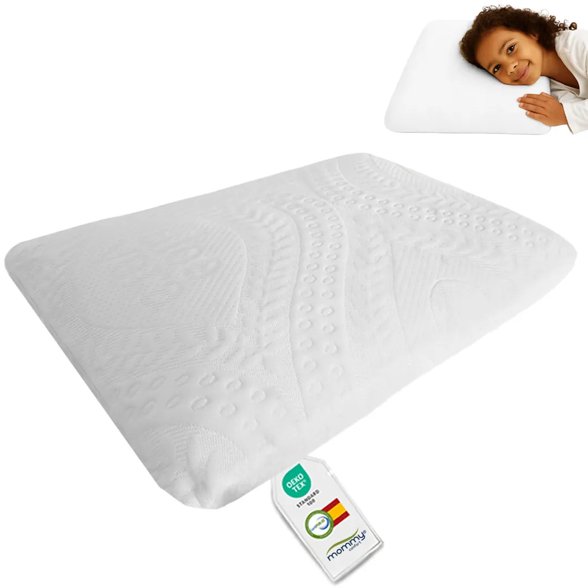
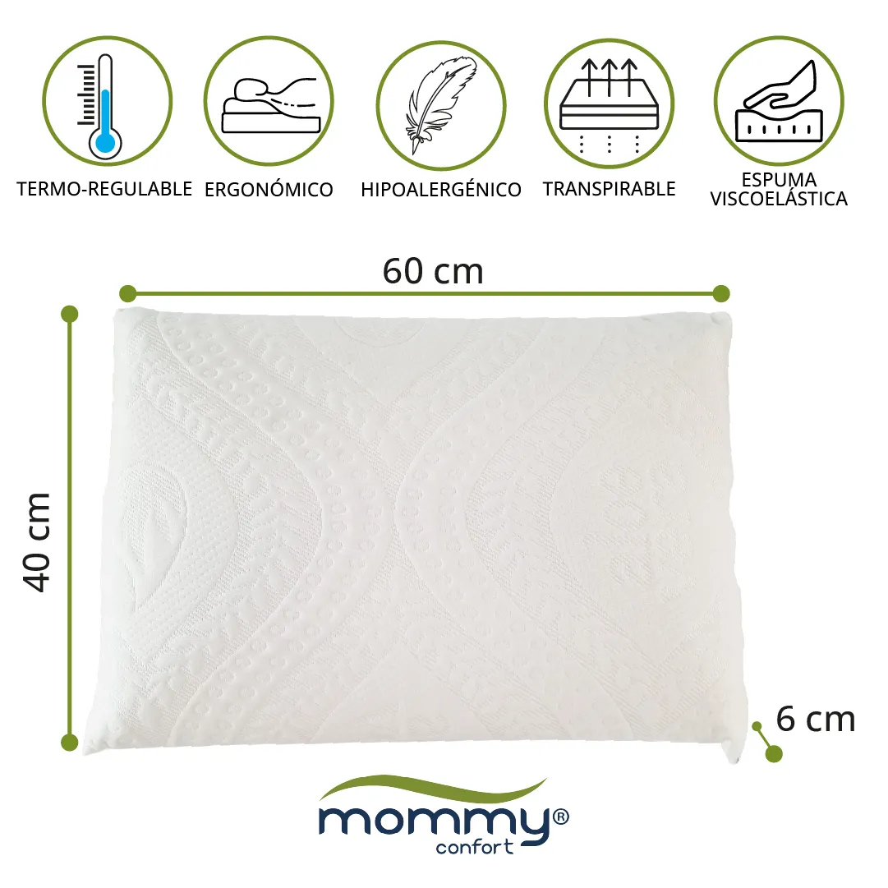
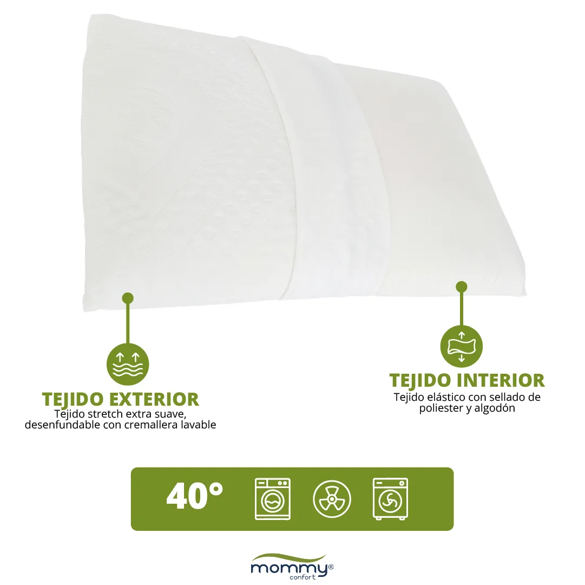
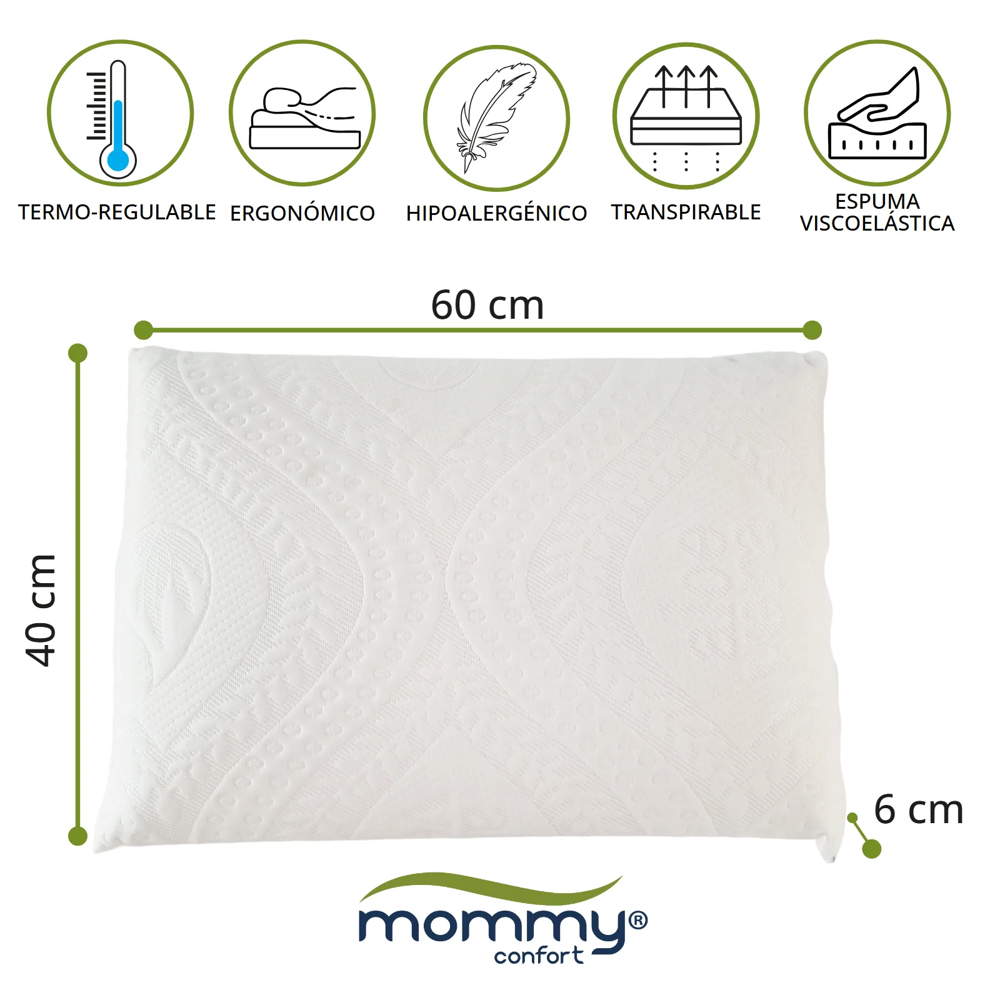
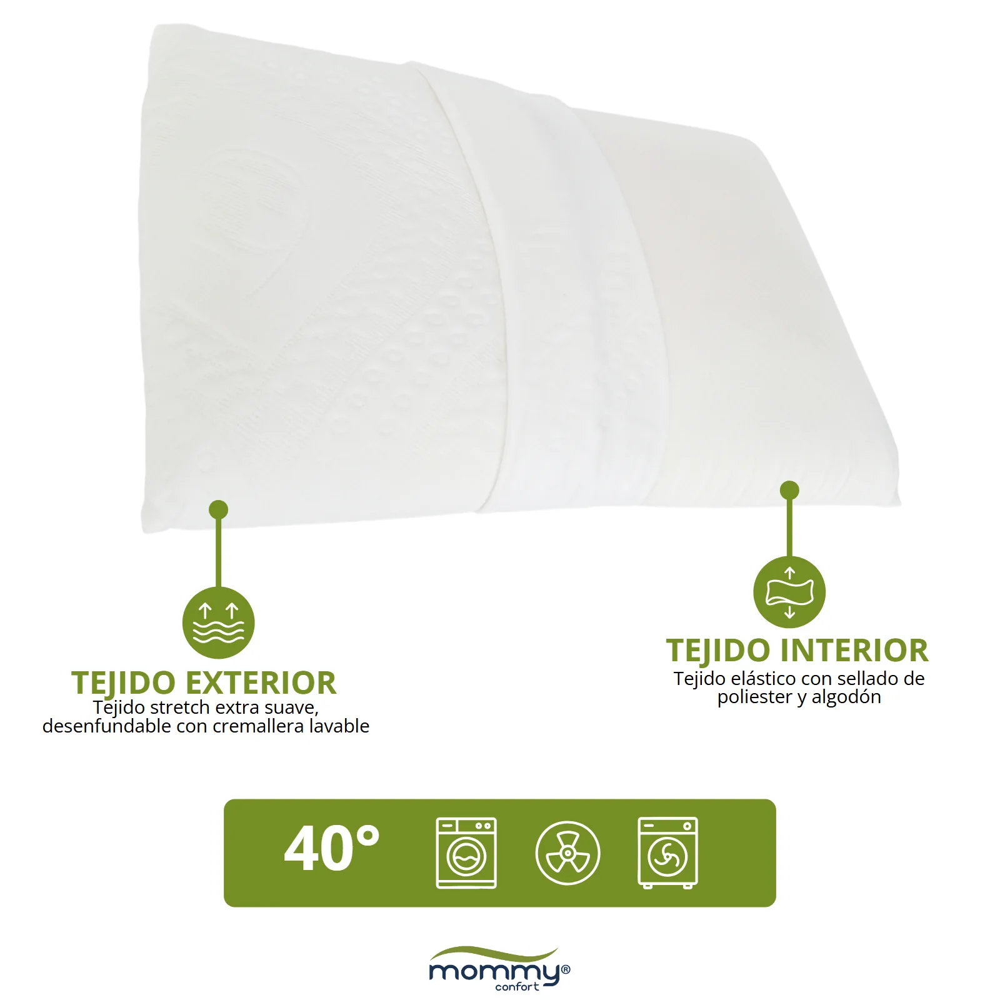
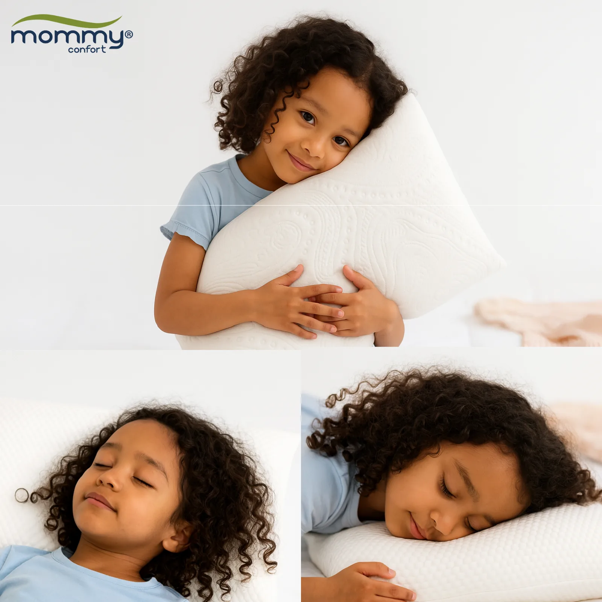
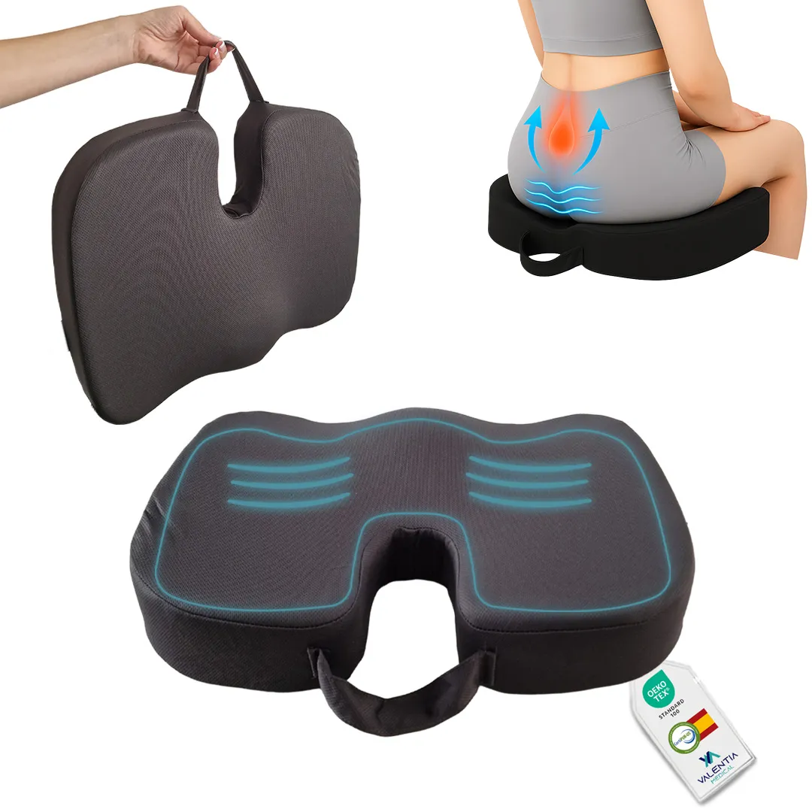
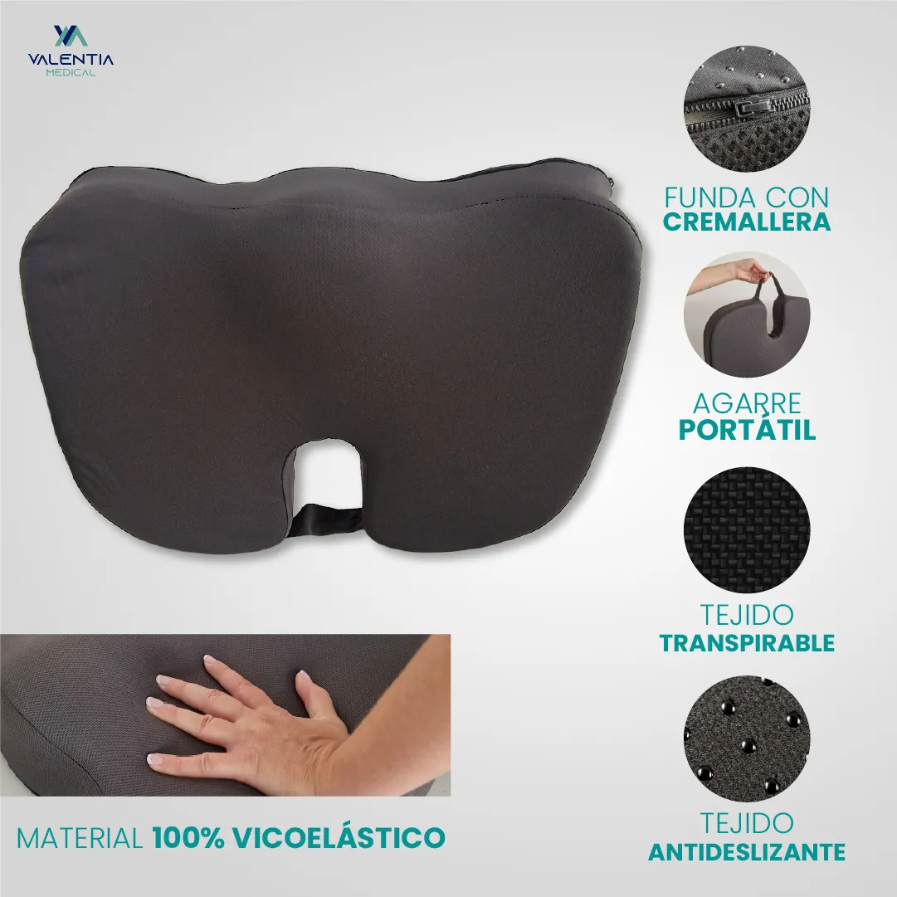
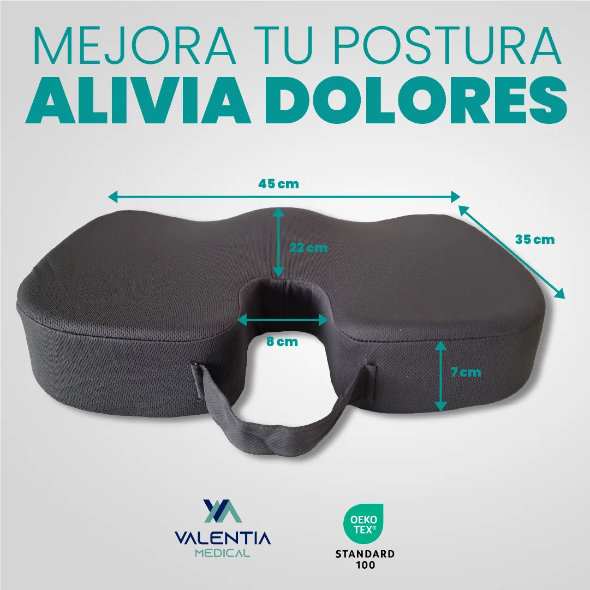

Mommy Confort

01 — ContextoEl punto de partida
Mommy Confort y Valentia Medical venden almohadas viscoelásticas y cojines ergonómicos: productos de salud y descanso donde la confianza lo es todo y las diferencias no se ven a simple vista.
02 — TrabajoQué diseñé
Desarrollé el material visual de sus listados: imágenes principales, infografías de ergonomía y postura, y módulos que comunican certificaciones, materiales y fabricación española. Piezas adaptadas a varios idiomas, incluido el mercado alemán.
Listados AmazonInfografíaContenido A+Multiidioma








Ergonomía y confianza explicadas con claridad: lo que no se puede tocar, se tiene que entender.